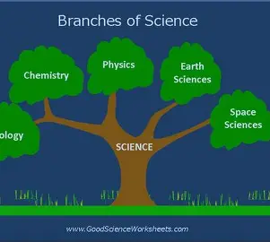
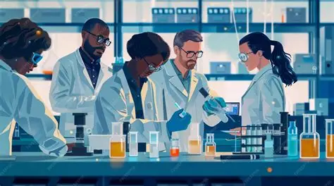
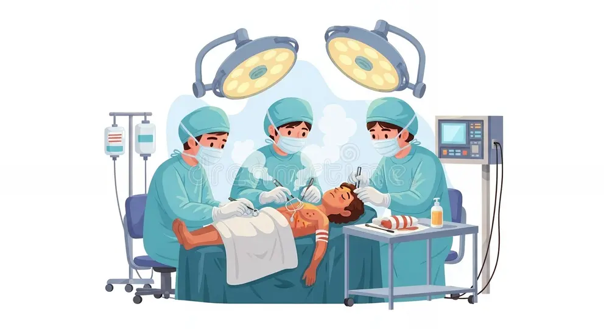
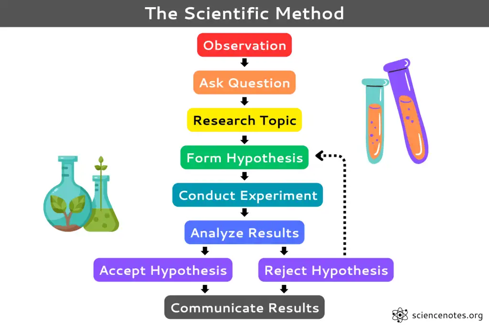

WEEK 1: INTRODUCTION TO SCIENCE
1.1 Meaning of Science
Science is the systematic study of the natural world through observation, experiment and reasoning. The word "science" comes from the Latin word scientia, which means "knowledge."
In simple words: Science is the way we find out how things work and why things happen around us.
Science helps us answer questions such as:
- Why does the sun rise every morning?
- Why do we fall sick?
- How does plant grow?
- Why foes water boil when heated

1.2 Branches of Science
Science is very wide, so it is divided into branches. The three main branches are:
- Biology : This is the study of living things (plants, animals and humans). Examples of what a biologist studies: the human body, diseases, plants, insects, birds.
- Chemistry : This is the study of matter (substances), what they are made of, their properties, and how they change. Examples: acids, bases, salt, soap-making, rusting of iron, burning.
- Physics : the study of matter and energy and how they relate to each other. Examples: light, sound, heat, electricity, motion, force.
Other branches of science are:
| Branch | What it studies |
|---|---|
| Agriculture | Farming, crops and animal reared for food |
| Geology | Rocks, minerals and Earth's structure |
| Astronomy | The sun, moon, stars and planets |
| Botany | plants |
| Zoology | Animals |
| Meterology | Weather and climate |
| Microbiology | Tiny living things (microbes) that can only be seen with the aid of a microscope |
| Health Science / Medicine | Diseases, treatment and health |
| Computer Science | Computers and information technology |
1.3 Importance of Science
Science is important because:
- It improves health. Science gave us medicines, vaccines and hospital equipment that cure and prevent diseases.
- It improves food production. Farmers use fertilizers, improved seeds and machines to grow more food.
- It makes communication easy. Phones, radio, television and the internet exist because of science.
- It makes transportation fast. Cars, trains, ships and aeroplanes are products of science.
- It provides energy. Electricity, generators, solar panels and cooking gas come from scientific knowledge.
- It helps us understand our environment. We learn about weather, soil, water and living things.
- It creates jobs. Many careers and industries depend on science.
- It makes life comfortable. Refrigerators, fans, washing machines and bulbs make daily life easier.
- It develops our thinking. Science teaches us to ask questions, observe carefully and find evidence.
1.4 Career Opportunities in Science
| Career | What the person does |
|---|---|
| Medical Doctor | Examines sick people, diagnoses diseases and prescribes treatment |
| Nurse | Cares for patients and assists doctors |
| Pharmacist | Tests blood and other samples to detect diseases |
| Dentist | Treats teeth and gums |
| Engineer | Designs and builds machines, roads, bridges, buildings and electrical systems |
| Agricultural Scientist / Farmer | Improves crops and livestock |
| Veterinary Doctor | Treats sick animals |
| Pilot | Flies aeroplanes (needs knowledge of physics) |
| Chemist | Studies and produces chemical substances (drugs, soap, paint) |
| Geologist | Studies rocks and looks for minerals and oil |
| Science Teacher / Lecturer | Teaches science in schools and universities |
| Computer Scientist / Programmer | Develops software, apps and websites |
| Environmental Scientist | Protects the environment and controls pollution |
| Meteorologist | Forecasts the weather |
| Medical Laboratory Scientist | Tests blood and other samples to detect diseases |



1.5 Scientific Method
The scientific method is the step-by-step way scientists use to solve problems and find answers.
Steps in the scientific method:

- Observation / Identifying the problem : Notice something and ask a question.
- Hypothesis : Make an intelligent guess (a possible answer) that can be tested.
- Experiment : Carry out a test to check if the guess is correct.
- Data collection / Recording results : Write down what you observe or measure.
- Analysis and Conclusion : Study the results and decide whether the hypothesis is true or false.
- Reporting / Communicating results : Share your findings with others.
- Observation: Bread kept in a warm, damp cupboard gets mouldy quickly.
- Hypothesis: Moisture and warmth help mould to grow.
- Experiment: Put one slice of bread in a dry container and another in a damp container. Keep both in a warm place for 5 days.
- Results: The damp bread grew mould; the dry bread did not.
- Conclusion: Moisture helps mould to grow. The hypothesis is correct.
- Hypothesis – a testable guess.
- Experiment – a fair test carried out to prove or disprove a hypothesis.
- Conclusion – the final answer drawn from the results.
- Variable – anything that can change in an experiment.